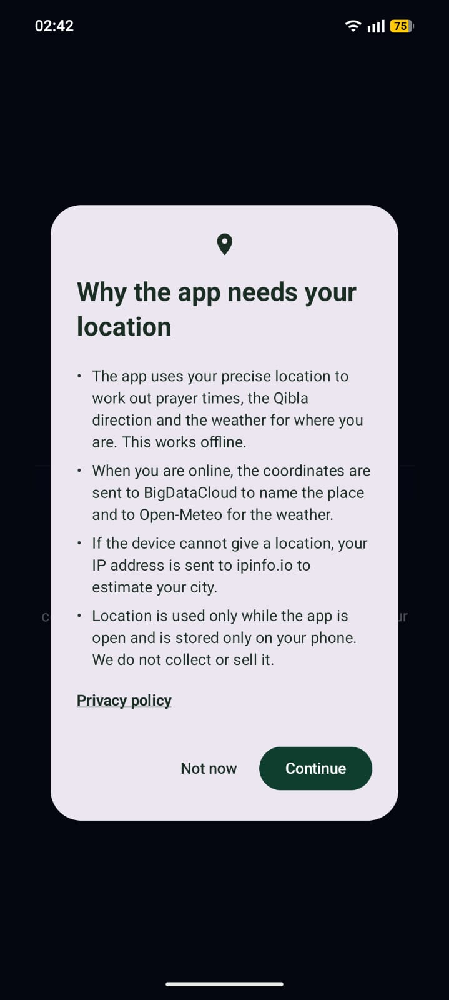
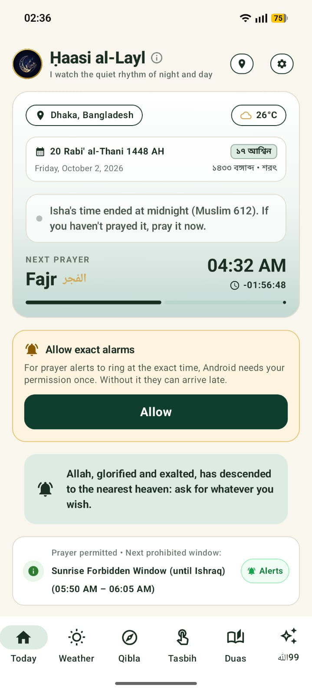
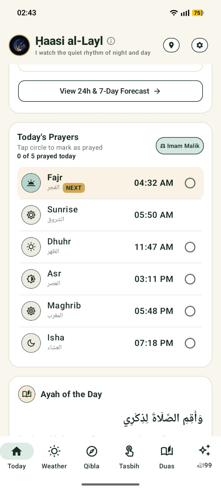
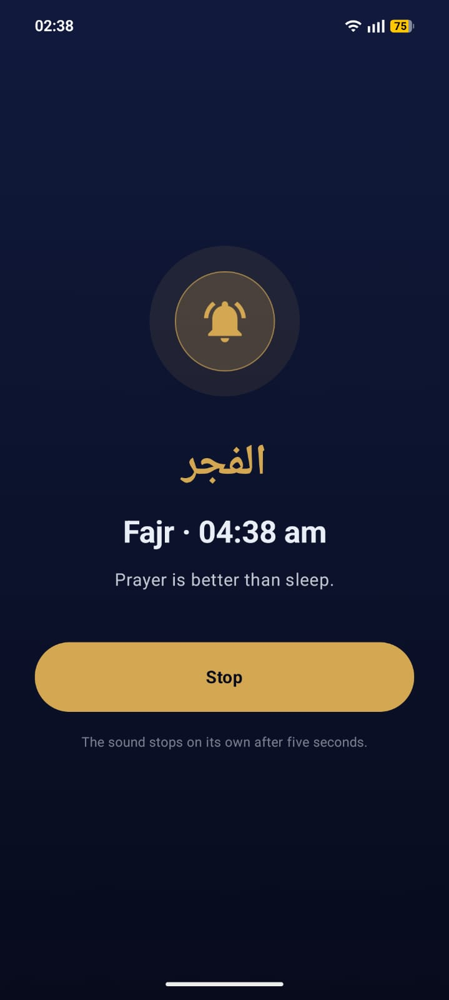
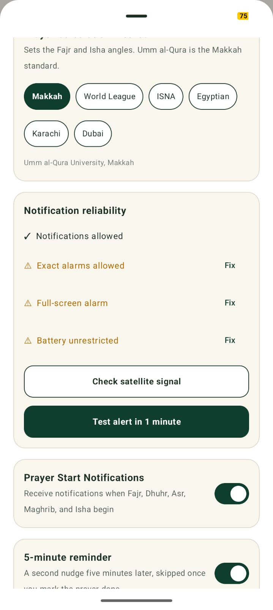
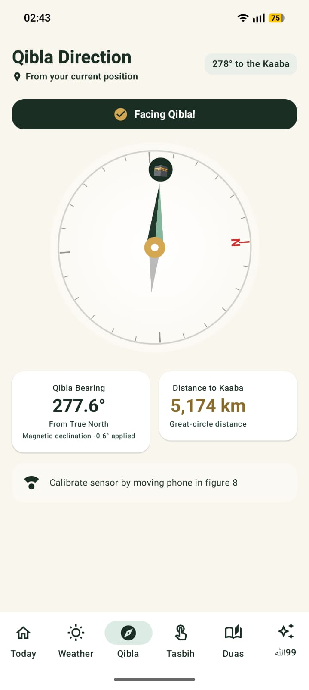
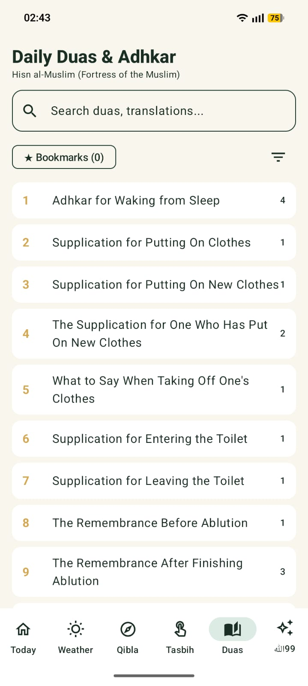

حَاسِي اللَّيْل · "The one who sips the night" · Android
Prayer times that work without internet, an alarm at each prayer, the Qibla, a digital Tasbih,
Hisn al-Muslim supplications and the 99 Names of Allah — in English, العربية, বাংলা, Español and
Português.
1. Getting started

Screenshot: the "Why the app needs your location" dialog
Before Android asks for location, the app says why.
On first launch the app explains why it needs your location, then Android asks for permission.
Allow location. Prayer times, the Qibla and the weather are worked out for exactly where you are, and the times keep working offline.
Allow notifications when asked, or prayer alerts cannot appear.
If Today shows "Allow exact alarms", tap Allow. Android needs this once so the alarm rings on the minute.
Prefer not to share location? Tap Not now and pick your city by hand.
2. The Today screen

Screenshot: Today, top of the screen (current + next prayer)
After midnight: Isha's time has ended, and Fajr is next. The card below asks to allow exact alarms.
Current prayer (dark panel): the prayer whose time is running, when it ends, and how long is left.
Between sunrise and Dhuhr there is none. After midnight it says Isha's time has ended.
Next prayer: its time, with a countdown.
The location chip, the Hijri and Gregorian dates (and the Bangla date in Bangladesh), and the weather.
Tap the card to see all of today's times, each with its meaning.
Tap the app name (ⓘ) at the top for what "Ḥaasi al-Layl" means.
Further down:

Screenshot: the Today's Prayers list
Tap a circle to mark a prayer as prayed.
Forbidden times: whether voluntary prayer is allowed now, and the next prohibited window. During one it says "PROHIBITED NOW" and how long is left.
Sky: the sun and moon across the sky, the moon's phase and when it rises or sets. Tap the pill for details.
Weather & daily guidance: the weather with a practical reminder for the day.
Today's prayers: tap the circle to mark a prayer as prayed. Marked prayers skip the 5-minute reminder.
Daily inspiration: an ayah and a hadith, new each day.
3. Prayer alerts

Screenshot: the prayer alarm screen (use "Test alert in 1 minute")
The alarm, over the lock screen.
At each prayer time the alarm appears over the lock screen and rings for five seconds. Tap Stop to close it sooner.
Five minutes later a reminder asks "Have you prayed …?" — skipped if you marked the prayer on Today.
Optional: the Tahajjud reminder when the last third of the night begins, and forbidden-time alerts when each window starts and ends.
If the phone is unlocked and in use, Android shows the alarm as a notification instead.
If an alert doesn't arrive

Screenshot: Settings → Notification reliability
Every row should show ✓.
Open Settings → Notification reliability. Every row should show ✓; tap Fix on any that shows ⚠:
Notifications allowed and Exact alarms allowed: needed for alerts to ring on time.
Full-screen alarm: lets the alarm show over the lock screen.
Battery unrestricted: on Xiaomi, OPPO, Realme, Vivo, OnePlus, Huawei and Honor phones, battery saving can block alarms.
Then tap Test alert in 1 minute. A countdown under the button tells you when it should ring.
4. Your location
The app uses your phone's own position: GPS, or the network when you are indoors and online. The internet is only used to put a name to it.
If the chip shows "≈ … · approximate", the position is only an estimate from your internet connection. Tap the chip, then Use my location.
To use another city, tap the chip and search for it. A city you pick by hand stays until you change it.
When you travel, the app notices the next time you open it and updates the times and alarms.
Madhab: sets the Asr time. Hanafi Asr is later (shadow twice the length of the object).
Calculation method: sets the Fajr and Isha angles. Choose the one your country uses — Karachi for Bangladesh, India and Pakistan; Makkah (Umm al-Qura) for the Gulf.
Alerts: prayer start, the 5-minute reminder, Tahajjud and forbidden times, each with its own switch.
Today's prohibited windows, each with its hadith reference.
About the developer: website, Send feedback by email, and the privacy policy.
6. Qibla

Screenshot: the Qibla tab
Turn until the needle points straight up.
Hold the phone flat and turn until the needle with the 🕋 points straight up. "Facing Qibla!" appears when you are within a few degrees.
Measured from where you are standing, with the bearing and the distance to the Kaaba. Magnetic declination is corrected for you.
If asked to calibrate, move the phone in a figure-8 a few times.
Keep away from metal, magnets and other phones; they disturb the compass.
7. Tasbih
Pick a dhikr — SubhanAllah, Alhamdulillah, Allahu Akbar, Astaghfirullah, La ilaha illallah, Salawat — and tap the circle to count.
Every tap buzzes, and a longer buzz marks each completed round (33, 34 or 100).
Counts and your lifetime total are saved. Reset clears the current dhikr.
8. Duas & Hisn al-Muslim

Screenshot: the Hisn al-Muslim chapter index
The chapters of Hisn al-Muslim, with how many duas each has.
The full Hisn al-Muslim (Fortress of the Muslim): 133 chapters, 302 supplications. Choose it first in the filter menu, then a chapter.
Each dua shows the Arabic, the pronunciation, the translation, how many times to say it, and its source.
A box labelled "Virtue (not part of the supplication)" holds what the hadith says about the dua. Don't recite it as part of the dua.
Search works in any language, and Arabic without vowel marks. Tap the bookmark icon to save a dua under ★ Bookmarks.
9. The 99 Names of Allah
Screenshot: the ﷲ99 tab
Each name with its meaning and pronunciation.
The ﷲ99 tab lists every name in Arabic with its meaning, and the pronunciation in your own script — Bengali letters in Bengali, a Spanish spelling in Spanish.
Search by name or meaning.
The list is the one narrated in at-Tirmidhi 3507. That Allah has ninety-nine names is in Sahih al-Bukhari 2736 and Muslim 2677.
10. Weather
Current conditions, 24 hours and 7 days, with humidity, wind and UV. Switch between °C and °F at the top.
Weather needs internet; prayer times do not.
11. Questions
Why does Isha end at midnight?
Sahih Muslim 612: "the time of Isha is until half of the night has passed." Midnight here is halfway
between sunset and Fajr. Most scholars hold that someone who missed it may still pray it until
Fajr, so after midnight the app reminds you to pray it now.
Why is a forbidden window 15 minutes?
Sahih Muslim 831 names three times: as the sun rises until it is high, at midday until it passes
its height, and as it sets until it has set. The app uses 15 minutes after sunrise, 10 minutes
before Dhuhr, and 15 minutes before sunset.
My prayer times differ from the mosque's by a few minutes.
Check the calculation method and madhab in Settings, and that the location chip is not marked
"approximate".
Does it work without internet?
Yes. Prayer times, alarms, Qibla, Tasbih, the duas and the 99 Names all work offline. Only the
weather and place names need a connection.
Privacy
No account, no ads, no tracking. See the privacy policy.